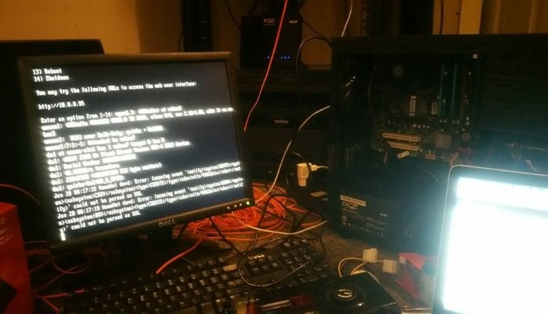
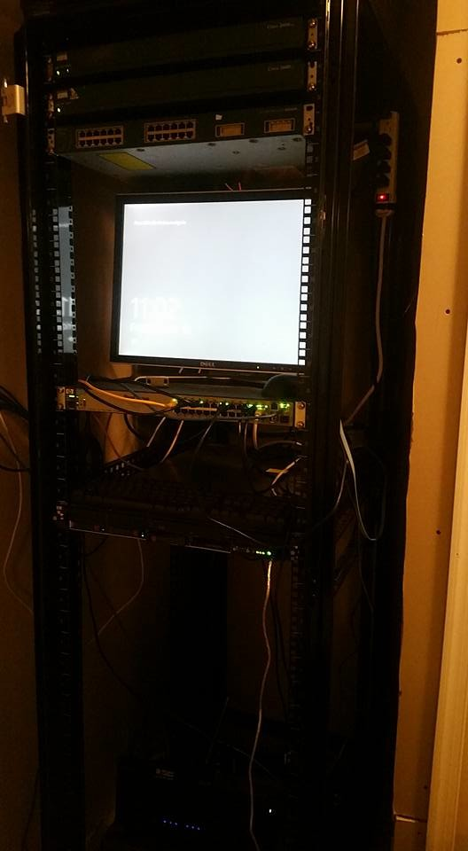
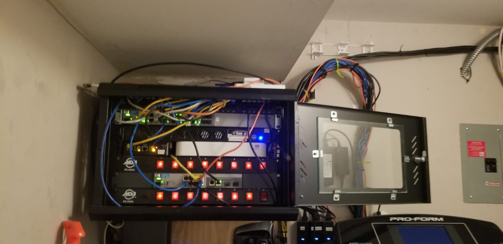

| || Home || | Gardening || | Networking || | Traveling || | Contact Me || |
|---|
I love Network Engineering because I like building, troubleshooting access to new technology.
The most interesting thing about in this field that you will never get bored.


